CM1
2800 fiches en français pour le niveau CM1, prêtes à imprimer et avec corrigé.
2.800 ressources
Thème

Roi – Fiche : texte à trous, compréhension orale et mots mêlés

Roche sédimentaire – Fiche : texte à trous, compréhension orale et mots mêlés

Rite funéraire – Fiche : texte à trous, compréhension orale et mots mêlés

Respect – Fiche : texte à trous, compréhension orale et mots mêlés

Carnivora – Fiche : texte à trous, compréhension orale et mots mêlés

Rate – Fiche : texte à trous, compréhension orale et mots mêlés

Radium – Fiche : texte à trous, compréhension orale et mots mêlés

Radioamateurisme – Fiche : texte à trous, compréhension orale et mots mêlés

Racisme – Fiche : texte à trous, compréhension orale et mots mêlés

Pétrole – Fiche : texte à trous, compréhension orale et mots mêlés

Pédagogie – Fiche : texte à trous, compréhension orale et mots mêlés

Poison – Fiche : texte à trous, compréhension orale et mots mêlés

Parti démocrate – Fiche : texte à trous, compréhension orale et mots mêlés

Paléozoïque – Fiche : texte à trous, compréhension orale et mots mêlés

Paléontologie – Fiche : texte à trous, compréhension orale et mots mêlés

Oxygène – Fiche : texte à trous, compréhension orale et mots mêlés

Ours en peluche – Fiche : texte à trous, compréhension orale et mots mêlés

Empire ottoman – Fiche : texte à trous, compréhension orale et mots mêlés

Oscars du cinéma – Fiche : texte à trous, compréhension orale et mots mêlés

Oignon – Fiche : texte à trous, compréhension orale et mots mêlés
Népal – Fiche : texte à trous, compréhension orale et mots mêlés
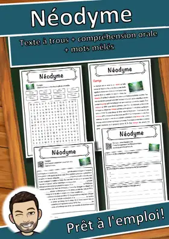
Néodyme – Fiche : texte à trous, compréhension orale et mots mêlés
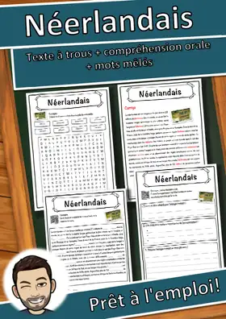
Néerlandais – Fiche : texte à trous, compréhension orale et mots mêlés
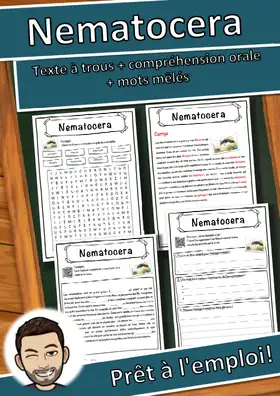
Nematocera – Fiche : texte à trous, compréhension orale et mots mêlés
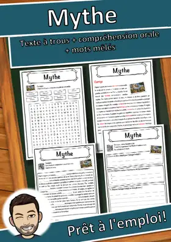
Mythe – Fiche : texte à trous, compréhension orale et mots mêlés
Moyen Âge – Fiche : texte à trous, compréhension orale et mots mêlés
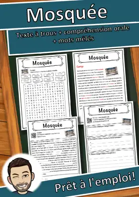
Mosquée – Fiche : texte à trous, compréhension orale et mots mêlés
Mosaïque – Fiche : texte à trous, compréhension orale et mots mêlés
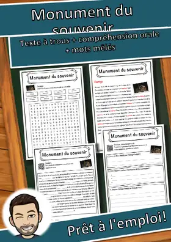
Monument du souvenir – Fiche : texte à trous, compréhension orale et mots mêlés
Microchiroptera – Fiche : texte à trous, compréhension orale et mots mêlés
Mexico – Fiche : texte à trous, compréhension orale et mots mêlés
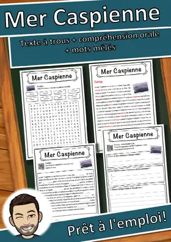
Mer Caspienne – Fiche : texte à trous, compréhension orale et mots mêlés
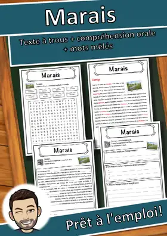
Marais – Fiche : texte à trous, compréhension orale et mots mêlés
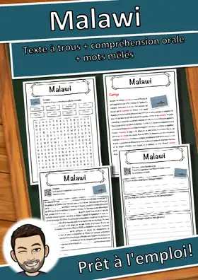
Malawi – Fiche : texte à trous, compréhension orale et mots mêlés
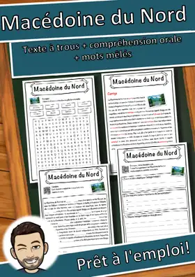
Macédoine du Nord – Fiche : texte à trous, compréhension orale et mots mêlés
Lanthane – Fiche : texte à trous, compréhension orale et mots mêlés
Johanna Spyri – Fiche : texte à trous, compréhension orale et mots mêlés
Jeunesses hitlériennes – Fiche : texte à trous, compréhension orale et mots mêlés
Jesse James – Fiche : texte à trous, compréhension orale et mots mêlés
Jakarta – Fiche : texte à trous, compréhension orale et mots mêlés
Intégration – Fiche : texte à trous, compréhension orale et mots mêlés
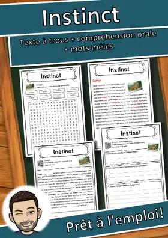
Instinct – Fiche : texte à trous, compréhension orale et mots mêlés
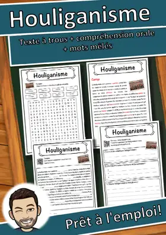
Houliganisme – Fiche : texte à trous, compréhension orale et mots mêlés
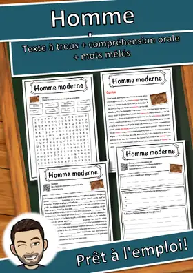
Homme moderne – Fiche : texte à trous, compréhension orale et mots mêlés
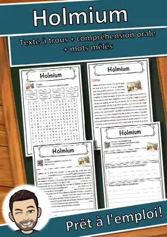
Holmium – Fiche : texte à trous, compréhension orale et mots mêlés
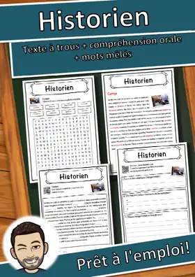
Historien – Fiche : texte à trous, compréhension orale et mots mêlés
Hibernation – Fiche : texte à trous, compréhension orale et mots mêlés
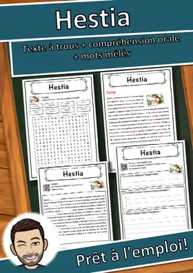
Hestia – Fiche : texte à trous, compréhension orale et mots mêlés
Aucune ressource trouvée – essaie un autre mot ou un autre filtre.